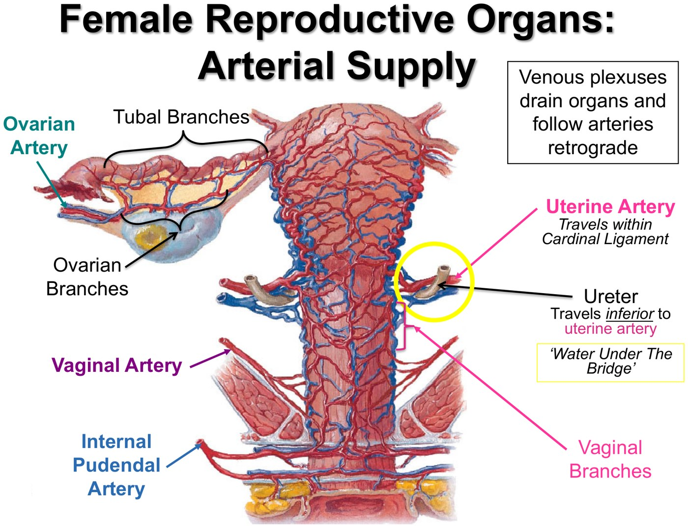
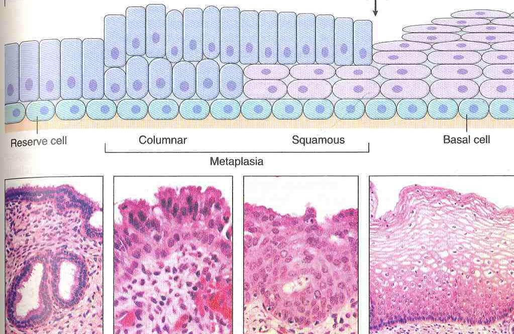
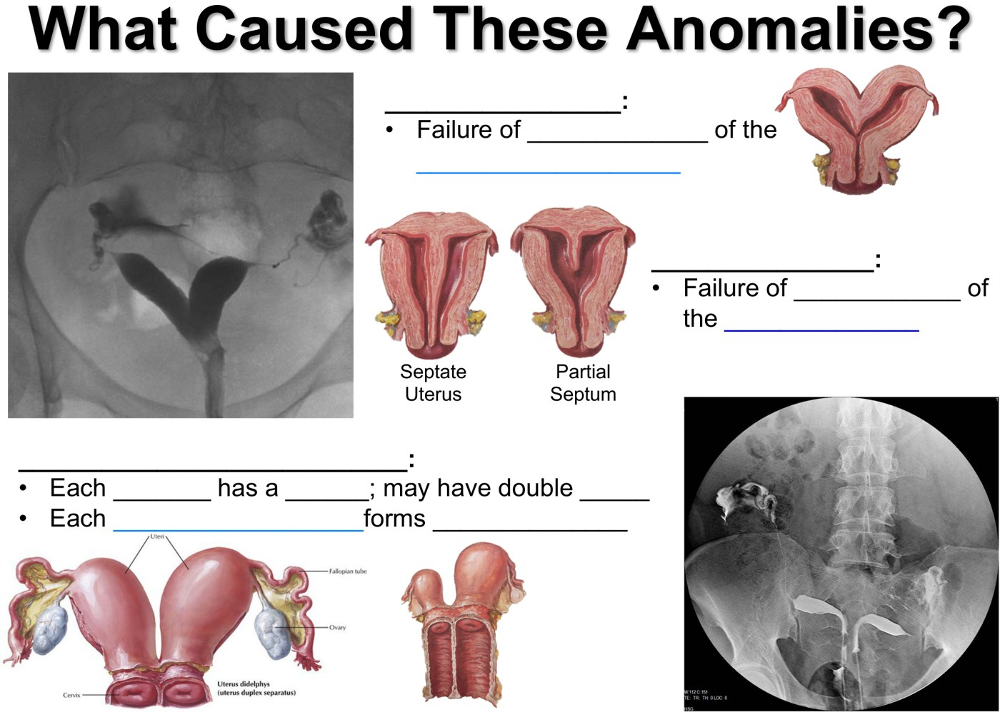
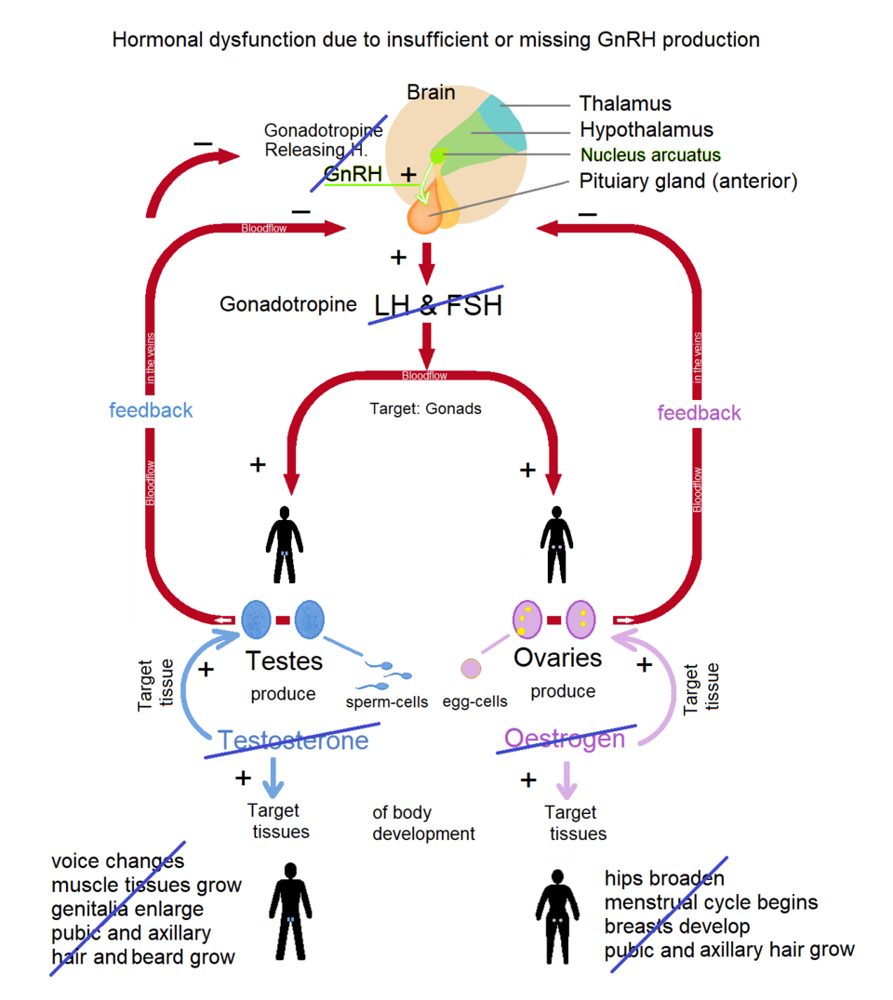
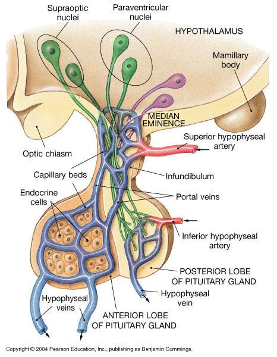
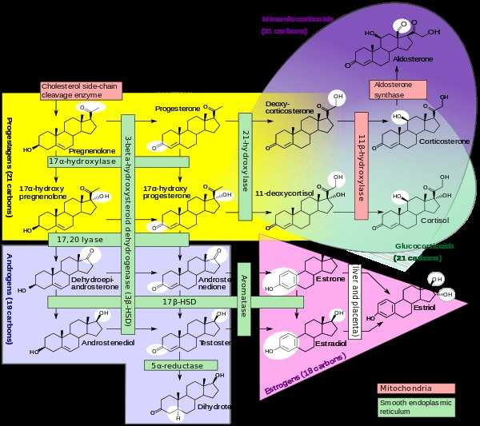
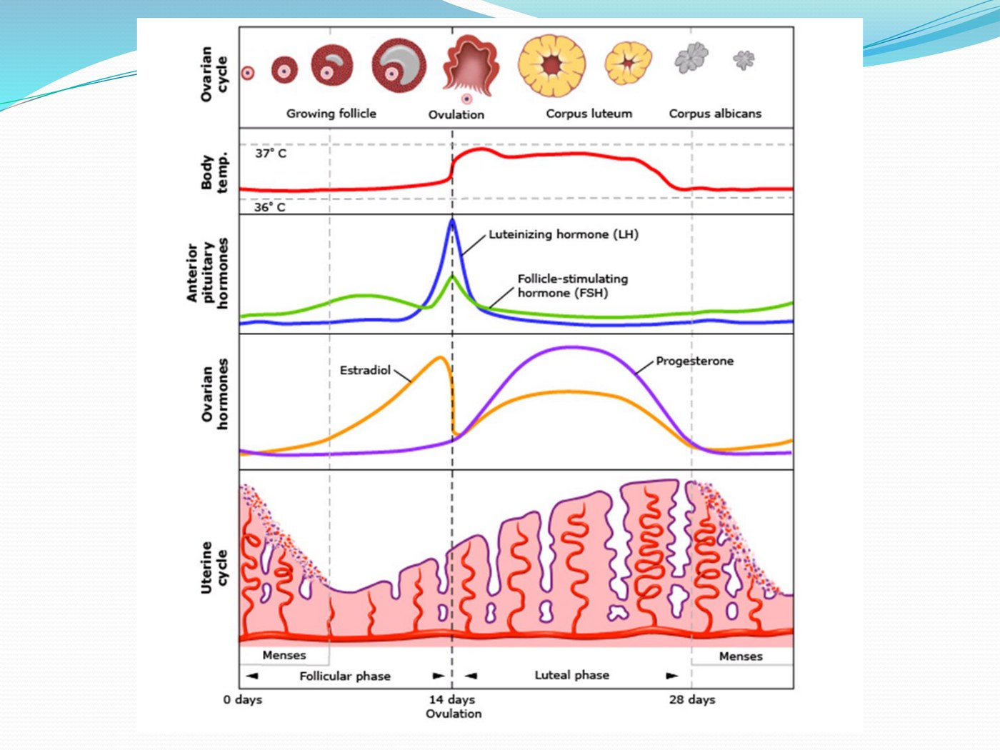
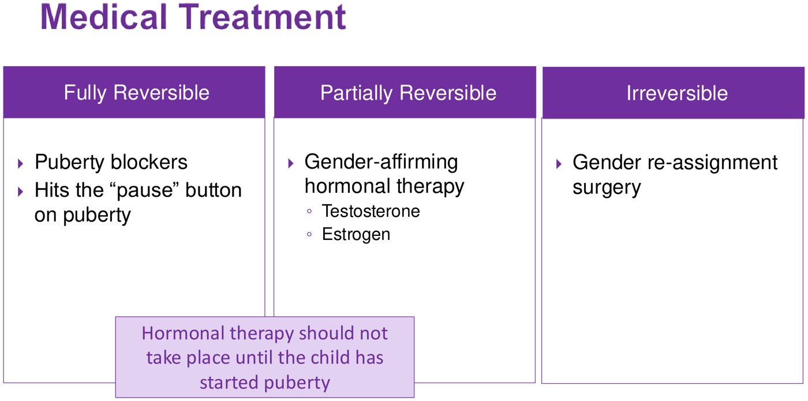

Sex Development & Reproduction
From the embryo to the adult: pelvic anatomy, histology and development, sex development and CAH, the HPG axis, the cycle and PMOS, and gender-affirming care. Warm up with 17 questions to find your weak spots, work through the five topics (the step bar marks the ones you missed), then finish with a 34-question final. Every answer links back to the lecture it came from.
Warm-up quiz
Cold, no notes. It's a diagnostic, not a grade: your score per topic lands on the step bar and tells you where to spend the day.
Pelvis, Histology & Development
The clinically useful anatomy (vessels, nerves, pouches, where fluid goes), the tract down the microscope, early embryology, and how the tract forms and malforms.
- Uterine artery (internal iliac, in the cardinal ligament) runs over the ureter: "water under the bridge", so find the ureter before clamping. Ovarian artery comes off the aorta, in the suspensory ligament; ovarian lymph drains to para-aortic nodes.
- Pelvic pain line: fundus, tubes, ovaries → sympathetics, T11–L1, felt in the lower abdomen and back. Cervix, upper vagina → parasympathetics, S2–S4, felt in the buttock and back of the leg. Perineum = pudendal (S2–S4).
- Pouch of Douglas is the lowest point of the peritoneal cavity; reach it through the posterior fornix. Straddle injury → urine in the superficial pouch, up the abdominal wall, never the thighs.
- Transformation zone = where cervical cancer starts and what a Pap must sample. Proliferative endometrium (straight glands, mitoses) = estrogen; secretory (coiled, sawtooth) = progesterone, so she ovulated.
- No testosterone → Wolffian ducts fade (Gartner's cyst). No AMH → Müllerian ducts make tubes, uterus, cervix, upper ⅓ vagina. Imperforate hymen → hematometrocolpos. Found a Müllerian anomaly? Image the kidneys.
Vessels, lymph and nerves

| Organ | Lymph drains to |
|---|---|
| Ovaries, tubes, fundus | Lumbar / para-aortic |
| Cervix, upper vagina, lower body | Internal + external iliac (check both) |
| Lower vagina | Sacral |
| Perineal skin | Superficial inguinal |
| Above the pain line | Below it | |
|---|---|---|
| Organs | Fundus, body, tubes, ovaries | Cervix, upper vagina |
| Nerves | Sympathetic, T11–L1/L2 | Parasympathetic, S2–S4 |
| Felt in | Lower trunk, flank, back | Buttock, perineum, back of thigh |
| Labour block | Numbs | Still feels |
|---|---|---|
| Lumbar epidural / spinal | Waist down | — |
| Caudal epidural | Birth canal | Contractions (can push) |
| Pudendal block | Lower vagina, perineum | Contractions, cervix |
Pouches, pockets and hemorrhoids
| Scenario | Where it goes | Why |
|---|---|---|
| Blood from a ruptured ectopic, upright patient | Pouch of Douglas | Lowest point of the peritoneal cavity; sampled via the posterior fornix (culdocentesis) |
| Straddle injury, spongy urethra torn | Superficial pouch → penis/scrotum/labia, up the abdominal wall | Colles' fascia is fused to the thighs and back of the membrane, continuous with Scarpa's |
| Pelvic fracture, membranous urethra torn | Deep pouch → up into the pelvis | Roof has the urogenital hiatus |
| Infected anal gland | Ischioanal fossa; can cross behind the anus (horseshoe) | Fossae connect through the deep postanal space |
Hemorrhoids: above the pectinate line (autonomic) = internal, painless, bleed; below (pudendal) = external, painful. The rectal veins link portal and caval systems, so portal hypertension and pregnancy cause them. Catheter in the vagina by mistake? It's contaminated: use a new one. Radical prostatectomy often cuts the cavernous nerves (parasympathetic): ED that pills can't fix.
The tract down the microscope

| If you see… | It is… |
|---|---|
| Straight glands, mitoses | Proliferative: estrogen |
| Coiled sawtooth glands, secretions, no mitoses | Secretory: progesterone, ovulation happened |
| Collapse, broken glands, blood | Menstrual |
| Branching ciliated folds | Fallopian tube |
| Non-keratinized squamous, no glands | Vagina (glycogen → acidic pH; thins after menopause) |
Follicle: primordial → primary → secondary (antrum) → Graafian → corpus luteum → corpus albicans, unless hCG (from the syncytiotrophoblast) rescues the corpus luteum until the placenta takes over at 7–9 weeks. Persistent proliferative endometrium in someone who should be cycling = unopposed estrogen.
The first four weeks, and when exposures matter
| Week | Job |
|---|---|
| 1 | Fertilize in the ampulla, cleave, hatch, implant |
| 2 | "Twos": epiblast/hypoblast, amnion/yolk sac, cyto/syncytiotrophoblast (makes hCG) |
| 3 | Gastrulation: three germ layers |
| 4 | Neural tube closes (~day 25 and 27); body folds; heart beats |
| Exposure window | Effect |
|---|---|
| Weeks 0–2 | All or none |
| Weeks 3–8 | Major structural anomalies |
| Week 9 to term | Mostly functional and minor |
Ectopic is mostly tubal (ampulla), raised by anything slowing transport: past PID, prior ectopic, tubal surgery, smoking. Folic acid before conception: the tube closes around the time a period is missed. Valproate and carbamazepine → spina bifida; rubella early → deafness, cataracts, PDA; no safe alcohol.
How the tract forms, and malforms

| Anomaly | What failed |
|---|---|
| Bicornuate (heart-shaped) | Upper parts of the ducts didn't fuse |
| Septate | The midline septum didn't regress |
| Didelphys (2 uteri, 2 cervices) | No fusion at all |
| Unicornuate | One duct never developed |
| Transverse vaginal septum | Vaginal plate didn't canalize |
| Imperforate hymen (commonest obstruction) | Bottom of the plate didn't perforate |
Homologues: genital tubercle → clitoris; urethral folds → labia minora; labioscrotal swellings → labia majora (scrotum). The gubernaculum becomes the ligament of the ovary and the round ligament, which runs through the inguinal canal into the labia majora.
Sex Development & CAH
Where normal differentiation breaks, the two big DSD groups, and congenital adrenal hyperplasia from the steroid pathway to the salt-wasting crisis.
- First two tests: karyotype + pelvic/abdominal ultrasound (uterus? gonads? big adrenals?). Use neutral words: gonads, phallus, labioscrotal folds.
- 46,XX overvirilized = CAH by a mile. 46,XY undervirilized = most often 5α-reductase deficiency (AR, high T:DHT) or partial androgen insensitivity (X-linked). Complete AIS looks female and is found at puberty.
- 21-hydroxylase (~95% of CAH): ↓ cortisol, ↓ aldosterone (75% salt-wasters), ↑ androgens. Low cortisol → high ACTH → hyperplasia. Diagnose with a high 17-OHP.
- Salt-wasting crisis at 1–3 weeks (low Na, high K, acidosis, hypoglycemia). Boys look normal at birth, so the newborn screen catches them.
- Treat for life: hydrocortisone 10–15 mg/m²/day divided + fludrocortisone (± salt) + stress dosing. Don't rush sex assignment; assignment ≠ surgery.
How it normally works

| Step | Does |
|---|---|
| SRY (on the Y) | Turns the gonad into a testis |
| Sertoli → AMH | Müllerian ducts regress: no uterus |
| Leydig → testosterone | Builds the internal male ducts (Wolffian) |
| 5α-reductase: T → DHT | Builds the external genitalia and prostate |
| No SRY | Ovaries and the female tract, but normal ovaries still need 46,XX |
The work-up
46,XY: the undervirilized male
| 5α-reductase deficiency | Partial AIS | Complete AIS | |
|---|---|---|---|
| Problem | T can't become DHT | Receptor partly works | Receptor doesn't work |
| Inheritance | Autosomal recessive | X-linked recessive | |
| Internal | Normal male; testes in abdomen, canal or folds | Testes | Testes; no uterus (AMH works) |
| At birth | Ambiguous | Ambiguous, micropenis or near-normal male | Looks like a typical girl |
| Puberty | Partial virilization; sparse beard, no acne or temporal recession | Incomplete virilization, gynecomastia, azoospermia | Found here: no periods |
| Diagnosis | High T:DHT after hCG | DNA analysis of the androgen receptor gene | |
CAH: follow the block

| 21-hydroxylase | 11β-hydroxylase | |
|---|---|---|
| Share of CAH | ~95% | ~5% |
| Cortisol | ↓ | ↓ |
| Aldosterone | ↓ (salt-wasting) | — but DOC ↑ acts like it |
| Androgens | ↑ virilization | ↑ virilization |
| Blood pressure | Low (crisis) | High |
| Marker | ↑↑ 17-OHP | 11-deoxycortisol, DOC |
| 21-OHD type | Enzyme left | Cortisol / aldosterone | Presents |
|---|---|---|---|
| Classic salt-wasting (75%) | < 1% | Both deficient | At birth or in a salt-wasting crisis |
| Classic simple virilizing (~25%) | 1–5% | Cortisol deficient; aldosterone enough | Virilization |
| Non-classic | More | Adequate | Premature pubarche; later hirsutism, acne, oligomenorrhea: a PMOS mimic (check 17-OHP) |
Management and sex assignment
| Piece | Details |
|---|---|
| Glucocorticoid, for life | Hydrocortisone 10–15 mg/m²/day in 2–3 doses (least growth-suppressing); prednisone or dexamethasone once growth is done |
| Mineralocorticoid (salt-wasters) | Fludrocortisone 0.05–0.2 mg daily; infants may need extra salt |
| Stress dosing | More glucocorticoid in illness, to prevent a crisis |
| Diagnosis | Identity outcome |
|---|---|
| 46,XX CAH, assigned female | ~90% identify female |
| 46,XY CAIS, assigned female | 100% identify female |
| 46,XY 5α-RD, assigned female | ~60% identify male (they virilize at puberty) |
| PAIS, synthesis defects, dysgenesis | ~25% gender dissatisfaction either way |
The HPG axis
Hypothalamus → GnRH → LH/FSH → gonad → steroids and inhibin. The rhythm is the signal.
- Fast pulses → LH. Slow pulses → FSH. Continuous → off (leuprolide).
- GnRH neurons have no ERα: steroid feedback goes through kisspeptin neurons (arcuate KNDy, preoptic AVPV).
- LH → theca/Leydig make androgen; FSH → granulosa/Sertoli aromatise it. Inhibin brakes FSH only.
- Shared α subunit (LH, FSH, TSH, hCG); β gives identity.
- Rate-limiting step: StAR → CYP11A1 → pregnenolone. Then aromatase (→ estrogens) and 5α-reductase (→ DHT).
The axis

The whole loop, and what fails without GnRH (Kallmann syndrome: crossed out). Sciencia58, CC0, via Commons.
Portal system: GnRH goes median eminence → portal veins → anterior pituitary. Oxytocin/ADH run straight to the posterior lobe. Slide from the lecture (© 2004 Pearson).| Parvicellular | Magnocellular | |
|---|---|---|
| Axon ends | Median eminence | Posterior pituitary |
| Into | Portal blood | Systemic blood |
| Makes | GnRH, CRH, TRH, GHRH, somatostatin, dopamine | Oxytocin, vasopressin |
| Site | Why it matters |
|---|---|
| Preoptic area | GnRH cell bodies; AVPV kisspeptin → the LH surge |
| Arcuate | KNDy pulse generator; reads leptin → athletes stop cycling |
| Median eminence | The exit door; no blood–brain barrier |
| Stalk cut | Everything falls except prolactin (loses dopamine) |
Pulse frequency: try it
GnRH pulse frequency and what the pituitary makes
Pick a regimen →Slow pulses favour FSH
A slow GnRH pulse frequency preferentially drives FSH-β gene transcription. In ovariectomised rhesus monkeys with the hypothalamus lesioned and GnRH replaced artificially, dropping the rate from one pulse per hour to one every three hours made LH fall variably but made FSH rise every time.
Where you see it: the luteal–follicular transition. As the corpus luteum dies, progesterone falls, GnRH pulses speed back up from their slow luteal rate — but the window of slow pulsing is what lets FSH climb and recruit the next cohort of follicles.The physiological middle
Around one pulse every 60–120 minutes is the normal working range across most of the cycle, with LH and FSH both released and each GnRH pulse producing a matching LH pulse.
FSH pulses are harder to see than LH pulses even here — FSH has a longer half-life and a component of constitutive secretion, so its trace is smoother.Fast pulses favour LH
Rapid pulse rates preferentially drive the α and LH-β subunit genes. In GnRH-deficient men given progressively faster pulses — 120 minutes down to 15 — mean LH rose while FSH did not change.
Where you see it: the late follicular phase running into the LH surge. Persistently fast pulsing raises the LH:FSH ratio — the pattern classically described in PCOS, where high LH relative to FSH drives thecal androgen without matching follicular maturation.Continuous GnRH switches the axis OFF
This is the counter-intuitive one. Give GnRH constantly and gonadotropin output collapses: the gonadotrope desensitises and GnRH receptors are downregulated. Knobil’s hypothalamic-clamp experiments showed it directly — pulsatile GnRH restored gonadotropin secretion in lesioned monkeys, while continuous GnRH produced only a transient response before shutting down.
This is not a curiosity. It is the entire mechanism of GnRH agonist therapy — leuprolide for prostate cancer, endometriosis, fibroids and central precocious puberty. A constant agonist is a more effective way to castrate than a blocker.Agonists vs antagonists
| GnRH agonist | GnRH antagonist | |
|---|---|---|
| Drugs | Leuprolide, nafarelin, goserelin | Degarelix, ganirelix, cetrorelix |
| How | Stimulates, then desensitises and downregulates | Blocks the receptor |
| Onset | Weeks, with a flare | Immediate, no flare |
| Used for | Endometriosis, fibroids, central precocious puberty | Prostate cancer (no flare); IVF (stops a premature LH surge) |
LH, FSH and the two-cell rule
| LH | FSH | |
|---|---|---|
| Ovary | Theca: androgen | Granulosa: aromatase → estradiol; inhibin |
| Testis | Leydig: testosterone | Sertoli: ABP; inhibin B |
| Receptor | GPCR → cAMP → PKA (GnRH itself uses Gq → IP3/Ca²⁺) | |
| Subunits | α shared with TSH and hCG → pregnancy tests measure β-hCG | |
| Pattern | Means |
|---|---|
| Low steroid, high LH + FSH | Primary gonadal failure |
| Low steroid, low/normal LH + FSH | Central (hypothalamus/pituitary) |
| High FSH, normal LH | Germ-cell failure: falling ovarian reserve, low inhibin B |
| High LH : FSH | PCOS (persistently fast pulses) |
| Peptide | From | FSH |
|---|---|---|
| Inhibin B | Granulosa (early follicular), Sertoli | ↓ |
| Inhibin A | Dominant follicle, corpus luteum | ↓ |
| Activin | Gonad and gonadotrope | ↑ |
| Follistatin | Pituitary (binds activin) | ↓ |
Steroids

| Aromatase | 5α-reductase | |
|---|---|---|
| Does | Androgen → estrogen | Testosterone → DHT (can't be aromatised) |
| Where | Granulosa, fat (main source after menopause), placenta, brain, bone | Skin, hair follicle, prostate, genitalia |
| Blocked by | Anastrozole, letrozole (ER+ breast cancer) | Finasteride, dutasteride (BPH, alopecia) → gynecomastia |
- Rate-limiting: StAR moves cholesterol into the mitochondrion; CYP11A1 makes pregnenolone (the deck's summary slide wrongly says progesterone). LH drives it.
- Not stored: secreted as made, carried on SHBG/albumin (progesterone on albumin and CBG). Only the free fraction acts, which is why PCOS can show a normal total and a high free testosterone.
- Estradiol primes progesterone receptors, so unopposed estrogen → hyperplasia and HRT with a uterus needs a progestogen.
- Signalling: genomic (hours–days, nuclear receptor) vs non-genomic via GPER1 (seconds–minutes).
The Cycle & PMOS
How the axis switches on, the one feedback flip that makes ovulation, what's normal about a period, and PMOS (formerly PCOS).
- Puberty releases a brake. GABA holds GnRH down in childhood; kisspeptin on GPR54 is the essential trigger; leptin is permissive. First sign: LH pulses at night.
- Estradiol flips from negative to positive feedback at midcycle → LH surge → ovulation ~36 h later. The luteal phase is fixed at ~14 days, so ovulation is 14 days before the next period.
- Normal: cycles 21–35 days, up to 80 mL loss. Irregular, often anovulatory cycles are normal for ~2 years after menarche. Dysmenorrhea = prostaglandins → NSAIDs. Heavy bleeding → tranexamic acid. PMS/PMDD are defined by timing.
- PMOS triad: hyperandrogenism + ovulatory dysfunction + mimics excluded. Ultrasound not required. Exclude: β-hCG, prolactin, TSH, 17-OHP, testosterone (> 5 nmol/L = think tumour), a partner's testosterone gel.
- Treat what bothers her most after lifestyle: COCP or cyclic progestin (≥ 4 bleeds a year protects the endometrium), letrozole for fertility, spironolactone/cyproterone with contraception for hair. Screen glucose, lipids, BP.
The cycle

| Signal | Effect |
|---|---|
| Estradiol | Suppresses LH/FSH most of the cycle; stimulates the surge when high for long enough |
| Progesterone | Slows LH pulses, prevents a second surge, makes the lining secretory |
| Inhibin | Suppresses FSH only |
| FSH | Granulosa: aromatase (androgen → estradiol), recruits follicles |
| LH | Theca: androgens; surge → ovulation, corpus luteum |
Menarche is late, not early: about 2–2.5 years after thelarche. Adrenarche (pubic hair, odour, acne) runs on its own adrenal clock.
Too little fat, too little leptin: anorexia and intense training delay puberty or stop periods.
Menopause: 12 months without a period; follicles run out, so FSH climbs (primary hypogonadism). Timing tends to follow her mother's.
| Symptom | Why | Treat |
|---|---|---|
| Cramps | Prostaglandins → contractions → uterine ischemia | NSAID (also lessens flow) |
| Heavy ovulatory bleeding | Clots broken down in the endometrium | Tranexamic acid during menses |
| PMS / PMDD | Brain over-responds to normal hormone swings | COCP (no cycle), SSRI, light therapy |
PMOS: diagnose by excluding first
| Mimic | Clue | Test |
|---|---|---|
| Pregnancy | New amenorrhea | β-hCG, always first |
| Androgen-secreting tumour | Rapid virilization over weeks–months | Testosterone > 5 nmol/L → image adrenals/ovaries |
| Non-classic CAH | Looks exactly like PMOS | 17-OHP high |
| Hyperprolactinemia | Galactorrhea | Prolactin |
| Thyroid disease | Palpitations, tremor, weight loss | TSH |
| Exogenous androgen | Partner's gel, supplements | History |
| Her main concern | Option |
|---|---|
| Irregular periods, no pregnancy plans | COCP, or cyclic progestin (bleed ≥ 4×/yr) |
| Wants to conceive | Lifestyle + modest weight loss, then letrozole (OB/GYN) |
| Hirsutism | Shaving/waxing/laser; COCP; spironolactone or cyproterone with contraception; eflornithine cream |
| Scalp hair loss | Minoxidil; anti-androgens; COCP |
Insulin resistance isn't a criterion but is nearly always there: central fat, acanthosis nigricans, skin tags, sleep apnea, fatty liver. Check A1c and lipids. A normal BMI doesn't rule PMOS out.
Tell her: conceiving is harder but very possible; she can lose weight; shaving doesn't make hair grow back thicker; diet fads don't cause it.
Gender-Affirming Care
The words, the diagnosis, mental health first, adult hormones and monitoring, and the three separate steps for youth.
- Sex, gender, gender identity and sexual orientation are four separate things. Gender dysphoria is the distress a mismatch can cause. Diagnosis is by listening: insistence, persistence, consistence.
- Mental health first. Suicidality is 2–3× higher; a supportive family is the biggest protective factor.
- Trans women: estradiol + anti-androgen (spironolactone → check potassium); VTE is the big risk, higher with oral than transdermal. Trans men: testosterone → check hematocrit.
- Monitor every 3 months in year 1, then 1–2×/yr. Screen the organs that are there: Pap if there's a cervix, mammogram if breast tissue, prostate if a prostate.
- Youth: nothing medical before puberty → blockers from Tanner 2 (fully reversible) → hormones ~16 (partly) → top surgery from 16 after a year on hormones. Discuss fertility before any of it.
Youth: three steps, three decisions

| Step | When | Reversible? |
|---|---|---|
| Support only | Before puberty | — |
| Puberty blocker (GnRH agonist) | From Tanner 2, dysphoria worse with puberty | Fully: stop it and puberty resumes |
| Estrogen or testosterone | Usually ~16; consent, parental support preferred not required | Partly (voice, breasts permanent) |
| Top surgery | 16+, after 1 year on hormones | No |
| Genital surgery | Adults only | No |
Adults: suppress, then replace
| Trans women (feminizing) | Trans men (masculinizing) | |
|---|---|---|
| Replace | Estradiol (oral or patch) | Testosterone (injection or gel) |
| Suppress | Spironolactone (N. America), cyproterone, or GnRH agonist | Usually not needed |
| Drug lab | Potassium (spironolactone) | Hematocrit (erythrocytosis) |
| Likely risks | VTE, gallstones, liver enzymes, triglycerides, weight gain | Polycythemia, acne, balding, sleep apnea, weight gain |
| Voice | No change | Deepens (permanent) |
| Levels | Testosterone into female range; estradiol not above peak physiologic | Male range; injections measured midway between doses |
Adult criteria (WPATH): persistent documented dysphoria, capacity to consent, age of majority, other health issues reasonably controlled (not excluded). Document dysphoria early in primary care; it strengthens the referral.
Before estrogen, ask about personal and family clotting history.
Reading testosterone: only the free and albumin-bound parts are active (bioavailable). Obesity and insulin resistance lower SHBG, so the total can look low while bioavailable T is fine.
Gel: skin transfer to others, lost with sweating. Injection: roller-coaster levels, but documented adherence.
Final quiz
34 new questions, mostly clinical vignettes like the progress test. Your results compare each topic with your warm-up.